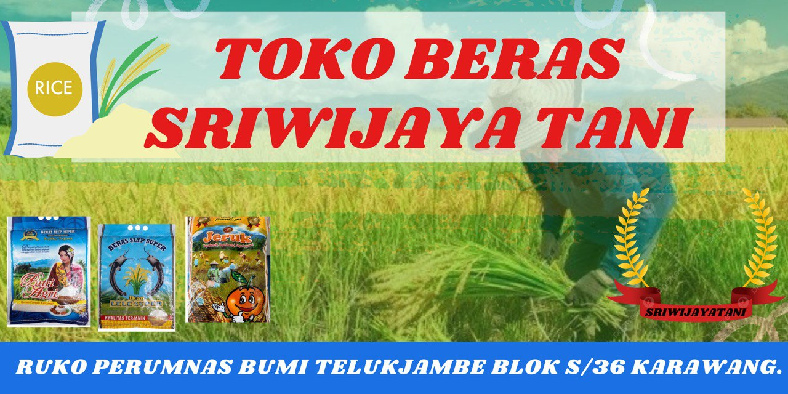

Tentang Saya

Halo! Saya Siti Marifah seorang Desainer Grafis yang terdorong oleh cerita dan spesialis dalam branding visual yang bermakna. Saya mahir dalam menggunakan Adobe Illustrator & Figma untuk mengubah ide abstrak menjadi desain yang strategis dan estetis.
Saya mendedikasikan waktu saya untuk mempelajari berbagai teknologi baru, termasuk HTML, CSS, JavaScript, dan framework terkait. Website ini adalah salah satu langkah saya untuk mempraktikkan ilmu yang saya dapatkan.
Proyek Saya
Berikut adalah beberapa proyek yang pernah saya kerjakan selama masa studi.
Membuat desain Banner yang Efektif dan Estetis dengan Adobe Illustrator & Figma
 Proyek ini merupakan hasil dari keahlian saya dalam merancang banner digital dan cetak yang menarik perhatian dan mengkomunikasikan pesan secara jelas. Dengan penguasaan Adobe Illustrator, saya mampu menciptakan ilustrasi vektor yang presisi, ikonografi khusus, dan layout cetak berkualitas tinggi untuk banner-banner berskala besar maupun kecil.
kalkulator Sederhana (JavaScript)

Studi kasus untuk menerapkan logika JavaScript dalam memanipulasi DOM. Proyek ini melatih kemampuan saya dalam mengelola event dan state pada aplikasi web sederhana.